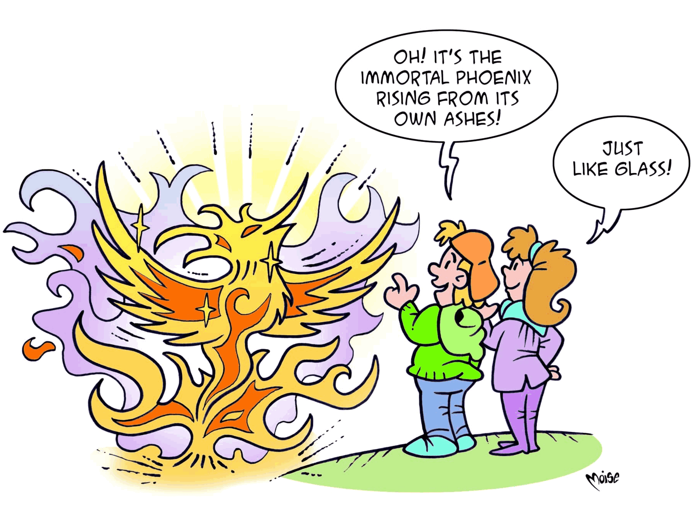

Raw Materials

How can we reduce the consumption of raw materials and energy?
By using secondary raw materials!
Secondary raw materials are composed of not only the scraps from processing raw materials, but also of
materials derived from the recovery and recycling of waste products.
Metals, glass, paper and plastics are sorted out to then be recycled thanks to technology and are reintroduced into the manufacturing process.
And of course, in addition to saving money and energy, the reusing of the same material in several manufacturing cycles allows us to considerably reduce the amount of waste.